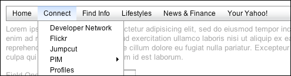
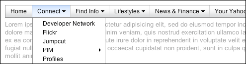
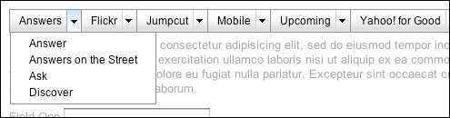

<?php
$title="The MenuNav Node Plugin";
$section="nodemenunav";
$component="MenuNav Node Plugin";
$highlightSyntax = true;
$releasenotes = true;
$prepend = '<style type="text/css">table th code { text-transform:none; }</style>';
include "../inc/header.inc";
?>
<div id="yui-main">
	<div class="yui-b">
		<div class="yui-ge">
			<div class="yui-u first" id="main">
			<!-- main column -->

				<h2><?php echo $component;?></h2>

				<div id="promo" class="component">

					<p>
						The MenuNav Node Plugin makes it easy to transform existing list-based 
						markup into traditional, drop down navigational menus that are both 
						accessible and easy to customize, and only require a small set of 
						dependencies.  The MenuNav Node Plugin features:
					</p>
					
					<dl>
						<dt>Progressive Enhancement</dt>
						<dd>
							The MenuNav Node Plugin is designed to support  
							<a href="http://en.wikipedia.org/wiki/Progressive_enhancement">Progressive Enhancement</a>,
							making it easy to transform simple, semantic markup into dynamic 
							drop-down menus with just a few lines of JavaScript.
						</dd>

						<dt>Small footprint</dt>
						<dd>
							The MenuNav Node Plugin has a small footprint.  It weighs in around 
							10 KB and requires a minimal set of dependencies (<a href="../api/module_yui.html">YUI</a>, 
							<a href="../api/module_event.html">Event</a>, 
							<a href="../api/module_dom.html">DOM</a>, 
							<a href="../api/module_node.html">Node</a>,
							<a href="../api/module_oop.html">OOP</a>, 
							and <a href="../api/module_classnamemanager.html">ClassNameManager</a>).
						</dd>
					
						<dt>Accessibility &#38; Usability Minded</dt>
						<dd>
							The MenuNav Node Plugin was built with both accessibility and usability 
							in mind.  The MenuNav Node Plugin implements established mouse and 
							keyboard interaction patterns to deliver a user experience that is both 
							familiar and easy to use.  To that foundation the MenuNav Node plugin 
							adds support for screen readers through the use of the 
							<a href="http://www.w3.org/TR/wai-aria/">WAI-ARIA Roles and States</a>.
							<a href="http://video.yahoo.com/watch/4059872/10967271">Watch this video</a> 
							for a quick a demo of a menu created using the MenuNav Node Plugin 
							using the WAI-ARIA Roles and States running in Firefox 3 using the 
							Window-Eyes screen reader.
						</dd>
					
						<dt>Easy to style and configure</dt>
						<dd>
							The MenuNav Node Plugin is easy to configure.  The visual presentation 
							of menus is controlled completely via CSS.  A handful of 
							straightforward <a href="#configuration-properties">configuration properties</a> 
							can be used to make common modifications to a menu's behavior.
						</dd>
						
						<dt><code>&#60;iframe&#62;</code> Shim for IE 6</dt>
						<dd>
							No menuing system would be complete without an 
							<code>&#60;iframe&#62;</code> to prevent <code>&#60;select&#62;</code> 
							elements from poking through menus in IE 6.
						</dd>
					</dl>

					<div class="yui-g">
						<div class="yui-u first">
							<div id="jumps">
								<h4>On This Page</h4>
								<ul>
									<li><a href="#start">Getting Started</a></li>
									<li>
										<a href="#using">Using the MenuNav Node Plugin</a>
										<ul>
											<li><a href="#orientation-style-behavior">Orientation, Style and Behavior</a></li>
											<li><a href="#styling-state">Styling State</a></li>
											<li><a href="#configuration-properties">Configuration properties</a></li>
											<li><a href="#handling-events">Handling Events</a></li>
											<li><a href="#iframe-shim"><code>&#60;iframe&#62;</code> Shim</a></li>
										</ul>										
									</li>
									<li><a href="#css-reference">CSS Reference</a></li>
									<li><a href="#support">Support &amp; Community</a></li>
									<li><a href="#filingbugs">Bug Reports &amp; Feature Requests</a></li>
								</ul>
							</div>
						</div>
						<div class="yui-u">
							<?php
							include('../inc/quicklinks.inc');
							?>
						</div>
					</div>
					<div class="clear"></div>
				</div><!-- /promo -->

				<h3 id="start">Getting Started</h3>

				<h4 id="dependencies">Include Dependencies</h4>

				<p>To use <?php echo $component;?>, include the following source files in your web page with the script tag:</p>
				<textarea name="code" class="HTML" cols="60" rows="1">
				&#60;!-- Source file --&#62;
				&#60;script src=&#34;http://yui.yahooapis.com/<?php echo($yuiCurrentVersion);?>/build/yui/yui-min.js&#34; type="text/javascript"&#62;&#60;/script&#62;
				</textarea>

				<?php
				include "../inc/include-notice.inc";
				?>

				<p>
					Next, apply the <code>yui-skin-sam</code> class name to an element that is a 
					parent of the element in which the menu lives. You can usually accomplish this 
					simply by putting the class on the <code>&#60;body&#62;</code> tag:
				</p>
				<textarea name="code" class="HTML" cols="60" rows="1">
				&#60;body class=&#34;yui-skin-sam&#34;&#62;
				</textarea>
				<p>
					For more information on skinning YUI components and making use of default 
					skins, see our 
					<a href="http://developer.yahoo.com/yui/articles/skinning/">Understanding YUI Skins</a> 
					article.
				</p>

				<h4 id="setup">Basic Setup</h4>
				<p>
				To create a menu using the MenuNav Node Plugin, start by including the required markup.  The markup
				for menus created using the MenuNav Node Plugin follows the same <a href="../widget/#markup">pattern established for Widgets</a>, 
				with each menu's content box containing one or more <code>&#60;ul&#62;</code> elements:
				</p>
				
				<h5>Menu Markup Example</h5>
				<textarea name="code" class="HTML" cols="60" rows="1">
				<div id="menu-1" class="yui-menu"><!-- Bounding box -->
					<div class="yui-menu-content"><!-- Content box -->
						<ul>
							<!-- Menu items -->
						</ul>
					</div>
				</div>
				</textarea>
				
				<p>
				Menuitems also follow the Widget markup pattern, with root node defined using an 
				<code>&#60;li&#62;</code> element: 
				</p>
				<h5>MenuItem Markup Example</h5>
				<textarea name="code" class="HTML" cols="60" rows="1">
				<li class="yui-menuitem"><!-- Bounding box -->
					<a class="yui-menuitem-content" href="http://www.yahoo.com"><!-- Content box -->
					Yahoo!
					</a>
				</li>
				</textarea>
				
				<p>
				Submenus are defined by wrapping the the menu markup in an <code>&#60;li&#62;</code> element.  Each 
				submenu must have have a label.  The label should preceed the menu markup, and the label's 
				<code>href</code> attribute should be set to the point to the id of its corresponding submenu.
				</p>
				<h5>Submenu Markup Example</h5>
				<textarea name="code" class="HTML" cols="60" rows="1">
				<li>
					<a class="yui-menu-label" href="#submenu-1">Submenu Label</a><!-- Menu label -->
					<div id="submenu-1" class="yui-menu"><!-- Bounding box -->
						<div class="yui-menu-content"><!-- Content box -->
							<ul>
								<!-- Menu items -->
							</ul>
						</div>
					</div>
				</li>
				</textarea>
				
				
				<p>
				Following the patterns illustrated above, the markup for a menu created using the MenuNav Node 
				Plugin comes together as follows:
				</p>
				<textarea name="code" class="HTML" cols="60" rows="1">
				<div id="menu-1" class="yui-menu"><!-- Root menu bounding box -->
					<div class="yui-menu-content"><!-- Root menu content box -->
						<ul>
							<li class="yui-menuitem"><!-- Menuitem bounding box -->
								<a class="yui-menuitem-content" href="http://www.yahoo.com"><!-- Menuitem content box -->
								Yahoo!
								</a>
							</li>
							<li>
								<a class="yui-menu-label" href="#pim">PIM</a><!-- Submenu label -->
								<div id="pim" class="yui-menu"><!-- Submenu bounding box -->
									<div class="yui-menu-content"><!-- Submenu content box -->
										<ul>
											<li class="yui-menuitem">
												<a class="yui-menuitem-content" href="http://mail.yahoo.com">Yahoo! Mail</a>
											</li>
											<li class="yui-menuitem">
												<a class="yui-menuitem-content" href="http://addressbook.yahoo.com">Yahoo! Address Book</a>
											</li>
											<li class="yui-menuitem">
												<a class="yui-menuitem-content" href="http://calendar.yahoo.com">Yahoo! Calendar</a>
											</li>
											<li class="yui-menuitem">
												<a class="yui-menuitem-content" href="http://notepad.yahoo.com">Yahoo! Notepad</a>
											</li>
										</ul>            
									</div>	
								</div> 
							</li>
						</ul>
					</div>
				</div>
				</textarea>
				
				<p>
				With the markup for the menu in place, simply get a Node reference for the root menu and then call
				the <a href="../api/Node.html#method_plug"><code>plug</code></a> method, passing in a reference to the MenuNav Node Plugin.
				</p>
				<textarea name="code" class="JScript" cols="60" rows="1">
				<script type="text/javascript">

					//	Call the "use" method, passing in "node-menunav".  This will load the 
					//	script and CSS for the MenuNav Node Plugin and all of the required 
					//	dependencies.

					YUI().use("node-menunav", function(Y) {

						//	Use the "contentready" event to initialize the menu when the subtree of 
						//	element representing the root menu (<div id="menu-1">) is ready to 
						//	be scripted.

						Y.on("contentready", function () {

							//	The scope of the callback will be a Node instance representing 
							//	the root menu (<div id="menu-1">).  Therefore, since "this"
							//	represents a Node instance, it is possible to just call "this.plug"
							//	passing in a reference to the MenuNav Node Plugin.
		
							this.plug(Y.plugin.NodeMenuNav);
		
						}, "#menu-1");
					
					});
				
				</script>
				</textarea>


<h3 id="using">Using the MenuNav Node Plugin</h3>

<h4 id="orientation-style-behavior">Orientation, Style and Behavior</h4>

<h5>Configuring Orientation</h5>
<p>
The root menu of menus built using the MenuNav Node Plugin can have a verical or horizontal 
orientation.  The default orientation for menus is vertical, but can be easily switched to 
horizontal by applying a class of <code>yui-menu-horizontal</code> to the node representing the 
root menu's bounding box, as illustrated in the following example:
</p>

<textarea name="code" class="HTML" cols="60" rows="1">
<div id="menu-1" class="yui-menu yui-menu-horizontal"><!-- Bounding box -->
	<div class="yui-menu-content"><!-- Content box -->
		<ul>
			<!-- Menu items -->
		</ul>
	</div>
</div>
</textarea>

<p>
Once the <code>yui-menu-horizontal</code> class name is applied to the node representing the 
root menu's bounding box, the menu's keyboard interaction is automatically adjusted for a 
horizontal orientation.  The default "Sam" skin provides the following default visualization for 
horizontal menus, as illustrated in the follow screen capture of a horizontal menu example:
</p>

<div class="wideimage"><a href="../examples/nodemenunav/node-menunav-2.html"></a></div>

<h5>Configuring Style &#38; Behavior</h5>
<p>
The default "Sam" skin provides two additional visualizations for horizontal menus, each of which 
can be applied by both changes to the menu label markup and through the application of a class to 
the node representing the root menu's bounding box.
</p>

<h6>Menu Button Visualization</h6>

<p>
The first of the two optional horizontal menu visualizations available with the "Sam" skin renders
each menu label as a menu button; each menu label is rendered with an arrow to the right 
of its text label, providing a visual cue that there is a corresponding submenu.
</p>

<div class="wideimage"><a href="../examples/nodemenunav/node-menunav-3.html"></a></div>

<p>
To apply this style to a horizontal menu, start by adding the class <code>yui-menubuttonnav</code> 
to the node representing the root menu's bounding box, as illustrated in the following example:
</p>

<textarea name="code" class="HTML" cols="60" rows="1">
<div id="menu-1" class="yui-menu yui-menu-horizontal yui-menubuttonnav"><!-- Bounding box -->
	<div class="yui-menu-content"><!-- Content box -->
		<ul>
			<!-- Menu items -->
		</ul>
	</div>
</div>
</textarea>

<p>Next, wrap the text node of each menu label in an <code>&#60;em&#62;</code> element:</p>

<textarea name="code" class="HTML" cols="60" rows="1">
<div id="menu-1" class="yui-menu yui-menu-horizontal yui-menubuttonnav"><!-- Bounding box -->
	<div class="yui-menu-content"><!-- Content box -->
		<ul>
		
			<li>
				<a class="yui-menu-label" href="#submenu-1"><em>Submenu Label</em></a>
				<div id="submenu-1" class="yui-menu">
					<div class="yui-menu-content">
					
						<!-- submenu content -->
					
					</div>
				</div>		
			</li>

		</ul>
	</div>
</div>
</textarea>

<p>
As a final, optional step, use the <code>autoSubmenuDisplay</code> and <code>mouseOutHideDelay</code> 
configuration properties to configure the menu labels to behave like menu buttons.  Set the 
<code>autoSubmenuDisplay</code> to <code>false</code>, so that each menu label's submenu isn't 
made visible until the label is clicked.  Set the <code>mouseOutHideDelay</code> to 
<code>0</code> so that a label's submenu is only hidden when the user mouses down on an area 
outside of the submenu.
</p>

<textarea name="code" class="JScript" cols="60" rows="1">
<script type="text/javascript">

	//	Call the "use" method, passing in "node-menunav".  This will load the 
	//	script and CSS for the MenuNav Node Plugin and all of the required 
	//	dependencies.

	YUI().use("node-menunav", function(Y) {

		//	Use the "contentready" event to initialize the menu when the subtree of 
		//	element representing the root menu (<div id="menu-1">) is ready to 
		//	be scripted.

		Y.on("contentready", function () {

			//	The scope of the callback will be a Node instance representing 
			//	the root menu (<div id="menu-1">).  Therefore, since "this"
			//	represents a Node instance, it is possible to just call "this.plug"
			//	passing in a reference to the MenuNav Node Plugin.

			this.plug(Y.plugin.NodeMenuNav, { autoSubmenuDisplay: false, mouseOutHideDelay: 0 });

		}, "#menu-1");
	
	});

</script>
</textarea>

<h6>Split Button Visualization</h6>

<p>
The other optional horizontal menu visualization available with the "Sam" skin renders each menu 
label as a split button.
</p>

<div class="wideimage"><a href="../examples/nodemenunav/node-menunav-4.html"></a></div>

<p>To apply this style to a horizontal menu, start by adding the class 
<code>yui-splitbuttonnav</code> to the node representing the root menu's bounding box, as 
illustrated in the following example:
</p>

<textarea name="code" class="HTML" cols="60" rows="1">
<div id="menu-1" class="yui-menu yui-menu-horizontal yui-splitbuttonnav"><!-- Bounding box -->
	<div class="yui-menu-content"><!-- Content box -->
		<ul>
			<!-- Menu items -->
		</ul>
	</div>
</div>
</textarea>

<p>
Next, define the markup for each menu label.  Start with a <code>&#60;span&#62;</code> with a class 
of <code>yui-menu-label</code> applied.  Inside the <code>&#60;span&#62;</code>, place two 
<code>&#60;a&#62;</code> elements &#151; one for each of the label's two clickable regions.  
Each <code>&#60;a&#62;</code> has separate, but related responsibilities:  The first 
<code>&#60;a&#62;</code> represents the label's default action.  The second <code>&#60;a&#62;</code>
toggles the display of a submenu whose content contains other options related to, or in the same 
category as the default action.  Therefore to configure the first <code>&#60;a&#62;</code>, 
simply set its <code>href</code> attribute to any URL.  For the second <code>&#60;a&#62;</code>,
apply a class name of <code>yui-menu-toggle</code>, and set the value of the <code>href</code> 
attribute to the id of the label's corresponding submenu.  Lastly, the text node of the second 
<code>&#60;a&#62;</code> should label the contents of its corresponding submenu. 
</p>

<textarea name="code" class="HTML" cols="60" rows="1">
<div id="menu-1" class="yui-menu yui-menu-horizontal yui-splitbuttonnav"><!-- Bounding box -->
	<div class="yui-menu-content"><!-- Content box -->
		<ul>
			<li>

				<span class="yui-menu-label"><!-- menu label root node -->
					<a href="http://answers.yahoo.com">Answers</a><!-- menu label default action -->
					<a href="#answers-options" class="yui-menu-toggle">Answers Options</a><!-- menu label submenu toggle -->
				</span>											

				<div id="answers-options" class="yui-menu">
					<div class="yui-menu-content">
						<ul>
							<li class="yui-menuitem"><a class="yui-menuitem-content" href="http://answers.yahoo.com/dir/">Answer</a></li>
							<li class="yui-menuitem"><a class="yui-menuitem-content" href="http://answersonthestreet.yahoo.com/">Answers on the Street</a></li>
							<li class="yui-menuitem"><a class="yui-menuitem-content" href="http://answers.yahoo.com/question/;_ylt=Av3Nt22Mr7YNs651NWFv8YUPzKIX;_ylv=3?link=ask">Ask</a></li>
							<li class="yui-menuitem"><a class="yui-menuitem-content" href="http://answers.yahoo.com/dir/;_ylt=Aqp_jJlsYDP7urcq2WGC6HBJxQt.;_ylv=3?link=over&amp;amp;more=y">Discover</a></li>
						</ul>
					</div>
				</div>				
				
			</li>
		</ul>
	</div>
</div>
</textarea>

<p>
Use the <code>autoSubmenuDisplay</code> and <code>mouseOutHideDelay</code> 
configuration properties to configure the menu labels to behave like split buttons.  Set the 
<code>autoSubmenuDisplay</code> to <code>false</code>, so that each menu label's submenu isn't 
made visible until the menu trigger is clicked.  Set the <code>mouseOutHideDelay</code> to 
<code>0</code> so that a label's submenu is only hidden when the user mouses down on an area 
outside of the submenu.
</p>

<textarea name="code" class="JScript" cols="60" rows="1">
<script type="text/javascript">

	//	Call the "use" method, passing in "node-menunav".  This will load the 
	//	script and CSS for the MenuNav Node Plugin and all of the required 
	//	dependencies.

	YUI().use("node-menunav", function(Y) {

		//	Use the "contentready" event to initialize the menu when the subtree of 
		//	element representing the root menu (<div id="menu-1">) is ready to 
		//	be scripted.

		Y.on("contentready", function () {

			//	The scope of the callback will be a Node instance representing 
			//	the root menu (<div id="menu-1">).  Therefore, since "this"
			//	represents a Node instance, it is possible to just call "this.plug"
			//	passing in a reference to the MenuNav Node Plugin.

			this.plug(Y.plugin.NodeMenuNav, { autoSubmenuDisplay: false, mouseOutHideDelay: 0 });

		}, "#menu-1");
	
	});

</script>
</textarea>


<h6>MenuItem Separators</h6>

<p>
The MenuNav Node Plugin makes it easy to create separators between items in a menu.  Simply group
related items together using the <code>&#60;ul&#62;</code> element and apply a class name of 
<code>first-of-type</code> to the first <code>&#60;ul&#62;</code>.  (If the 
<code>first-of-type</code> class name is not applied to the first <code>&#60;ul&#62;</code> of a 
submenu, it will automatically be applied by the MenuNav's constructor.)  The follow example 
illustrates a submenu with two separators:
</p>
<textarea name="code" class="HTML" cols="60" rows="1">
<div id="pim" class="yui-menu">
	<div class="yui-menu-content">	

		<ul class="first-of-type">
			<li class="yui-menuitem"><a class="yui-menuitem-content" href="http://mail.yahoo.com">Mail</a></li>
			<li class="yui-menuitem"><a class="yui-menuitem-content" href="http://www.zimbra.com">Zimbra</a></li>
		</ul>

		<ul>
			<li class="yui-menuitem"><a class="yui-menuitem-content" href="http://addressbook.yahoo.com">Address Book</a></li>
			<li class="yui-menuitem"><a class="yui-menuitem-content" href="http://calendar.yahoo.com">Calendar</a></li>
			<li class="yui-menuitem"><a class="yui-menuitem-content" href="http://notepad.yahoo.com">Notepad</a></li>
		</ul>
		
		<ul>
			<li class="yui-menuitem"><a class="yui-menuitem-content" href="http://messenger.yahoo.com">Messenger</a></li>
		</ul>
		
	</div>	
</div>   
</textarea>
<p>
With the separator markup in place, the default "Sam" skin will render a top border between each
<code>&#60;ul&#62;</code> element, as illustrated in the following screen capture of one of the 
MenuNav Node Plugin examples:
</p>

<div class="wideimage"><a href="../examples/nodemenunav/node-menunav-2.html"></a></div>

<h4 id="styling-state">Styling State</h4>
<p>
The MenuNav Node Plugin manages the state of a menu's descendants through the application and 
removal of class names.  Class names representing state are constructed using the descendent's 
name followed by a suffix representing the state.  For example, hidden submenus have a class of
<code>yui-menu-hidden</code>.  Class names used to represent state are always applied to the 
descendant's root node.  See the <a href="#css-reference">CSS reference</a> for the complete list of state class
names. 
</p>

<h5>Active vs. Inactive</h5>
<p>
Menuitems and menu labels have a default (inactive) state and an active state.  Menuitems and 
menu labels are considered active when the user is interacting with them via the keyboard or the 
mouse.  The active class name applied to menuitems and menu labels has two benefits:  It provides
a single entry point for styling state that would otherwise require the use of multiple CSS 
pseudo classes (<code>:hover</code> and <code>:focus</code>).  The second benefit to the use of 
the active class name is that it provides consistent styling of state across all types of elements in 
all <a href="http://developer.yahoo.com/yui/articles/gbs/">A-Grade browsers</a>.  
(IE 6 only supports the <code>:hover</code> and <code>:focus</code> pseudo classes on
<code>&#60;a&#62;</code> elements.  And while IE 7 supports <code>:hover</code> on all elements, it 
only supports <code>:focus</code> pseudo class on <code>&#60;a&#62;</code> elements.)
</p>

<h5>Visible vs. Hidden</h5>
<p>
By default all submenus are hidden and that state is reflected by the application of the 
<code>yui-menu-hidden</code> class name.  If the <code>yui-menu-hidden</code> class name is not 
applied to the bounding box node of all submenus, it will automatically be applied by the MenuNav's
constructor.  When a submenu is visible, the <code>yui-menu-hidden</code> class name is removed 
and a class <code>yui-menu-label-menuvisible</code> is applied to the submenu's corresponding label.
</p>

<h4 id="configuration-properties">Configuration properties</h4>

<p>
The MenuNav Node Plugin has several configuration properties that can be set via an object literal 
that is passed as a second argument to a Node instance's 
<a href="../api/Node.html#method_plug"><code>plug</code></a> method.  (<em>Note:</em>  These 
properties are <em>case sensitive</em>.)  In the following example, the value of the 
<code>mouseOutHideDelay</code> property is set to 1000.
</p>

<textarea name="code" class="JScript" cols="60" rows="1">
var oMenuNav = Y.Node.get("#productsandservices");
oMenuNav.plug(Y.plugin.NodeMenuNav, { mouseOutHideDelay: 1000 });
</textarea>

<p>The complete list of the MenuNav Node Plugin configuration properties are:</p>

<table class="yui-table">
	<thead>
		<tr>
			<th>Name</th>
			<th>Default Value</th>
			<th>Description</th>			
		</tr>
	</thead>
	<tbody>
		<tr id="usearia">
			<td>useARIA</td>
			<td>True</td>
			<td>Boolean indicating if use of the WAI-ARIA Roles and States should be enabled for the MenuNav.  Set to true by default for Firefox 3 and Internet Explorer 8 as currently only these browsers have support for ARIA, and are supported by several screen readers for Windows that also offer support for ARIA.</td>
		</tr>
		<tr id="autosubmenudisplay">
			<td>autoSubmenuDisplay</td>
			<td>True</td>
			<td>Boolean indicating if submenus are automatically made visible when the user mouses over the menu's items.</td>
		</tr>
		<tr id="submenushowdelay">
			<td>submenuShowDelay</td>
			<td>250</td>
			<td>Number indicating the time (in milliseconds) that should expire before a submenu is made visible when the user mouses over the menu's label.  </td>
		</tr>
		<tr id="submenuhidedelay">
			<td>submenuHideDelay</td>
			<td>250</td>
			<td>Number indicating the time (in milliseconds) that should expire before a submenu is hidden when the user mouses out of a menu label heading in the direction of a submenu.</td>
		</tr>
		<tr id="mouseouthidedelay">
			<td>mouseOutHideDelay</td>
			<td>750</td>
			<td>Number indicating the time (in milliseconds) that should expire before a submenu is hidden when the user mouses out of it.</td>
		</tr>
	</tbody>
</table>

<h4 id="handling-events">Handling Events</h4>

<p>
The MenuNav Node Plugin publishes no custom events of its own.  To listen for any DOM-related 
events for a menu built using the MenuNav Node Plugin, use the <a href="../api/Node.html#method_on"><code>on</code></a> method of the 
plugin's host Node instance.  The following example illustrates how to listen for the 
<code>click</code> event of menu a built using the MenuNav Node Plugin:
</p>

<textarea name="code" class="JScript" cols="60" rows="1">
// Get a Node instance for HTML element 
var oMenuNode = Y.Node.get("#menu-nav-1");

// Apply the MenuNav Node Plugin to the Node instance
oMenuNode.plug(Y.plugin.NodeMenuNav);

// Register a "click" event listener to the Node instance using the "on" method 
oMenuNode.on("click", function () {

	alert("here");

});
</textarea>
<p>For additional information on listening for DOM-related events, see the 
<a href="../node/#node-events">DOM Events</a> section of the 
<a href="../node/">Node landing page</a>.
</p>


<h4 id="iframe-shim"><code>&#60;iframe&#62; Shim</code></h4>
<p>
The MenuNav Node Plugin uses an <code>&#60;iframe&#62;</code> shim to prevent 
<code>&#60;select&#62;</code> elements from poking through submenus in IE 6.  The 
<code>&#60;iframe&#62;</code> shim is only used for IE 6, and for performance its creation is 
deferred until the first time a submenu is made visible.  Once created, the 
<code>&#60;iframe&#62;</code> shim is appended to the node representing a submenu's bounding box, 
and is therefore a sibling of the the a submenu's content box.  All styling of the 
<code>&#60;iframe&#62;</code> is handled by the core CSS file for the MenuNav Node Plugin, so 
authors of custom skins won't have to worry about it.  The markup template used to create each 
<code>&#60;iframe&#62;</code> is accessible via the 
<a href="../api/Y.plugin.NodeMenuNav.html#property_NodeMenuNav.SHIM_TEMPLATE"><code>SHIM_TEMPLATE</code></a> property.  
To help users of screen readers to avoid mistakenly interacting with the 
<code>&#60;iframe&#62;</code> shim, its <code>tabindex</code> attribute is set to "-1" and its 
title attribute is set to "Menu Stacking Shim".  The value of the <code>&#60;iframe&#62;</code>'s 
<code>title</code> attribute is available via the 
<a href="../api/Y.plugin.NodeMenuNav.html#property_NodeMenuNav.SHIM_TEMPLATE_TITLE"><code>SHIM_TEMPLATE_TITLE</code></a>
property for easy localization.  Lastly, the <code>src</code> attribute of the 
<code>&#60;iframe&#62;</code> is set to "javascript:false;" so that it won't load a 
page inside it, preventing the secure/nonsecure warning in IE when using the MenuNav Node Plugin 
with HTTPS.
</p>


<h3 id="css-reference">CSS reference</h3>
<table class="yui-table">
	<thead>
		<tr>
			<th>Class Name</th>
			<th>Description</th>			
		</tr>
	</thead>
	<tbody>
		<tr>
			<td>yui-menu</td>
			<td>Applied to the element representing a menu's bounding box.</td>
		</tr>
		<tr>
			<td>yui-menu-content</td>
			<td>Applied to the element representing a menu's content box.</td>
		</tr>
		<tr>
			<td>yui-menu-hidden</td>
			<td>Applied to a menu's bounding box when hidden.</td>
		</tr>
		<tr>
			<td>yui-shim</td>
			<td>Applied to the element serving as a menu's shim.</td>
		</tr>
		<tr>
			<td>yui-menu-horizontal</td>
			<td>Renders a menu horizontally.  Applied to a menu's bounding box element.</td>
		</tr>
		<tr>
			<td>yui-menu-label</td>
			<td>Applied to the element representing a menu's label.</td>
		</tr>
		<tr>
			<td>yui-menu-label-active</td>
			<td>Applied to a menu's label when it is a MenuNav's active descendent.</td>
		</tr>
		<tr>
			<td>yui-menu-label-menuvisible</td>
			<td>Applied to a menu's label when its corresponding menu is visible.</td>
		</tr>
		<tr>
			<td>yui-menuitem</td>
			<td>Applied to the element representing a menuitem's bounding box.</td>
		</tr>
		<tr>
			<td>yui-menuitem-content</td>
			<td>Applied to the element representing a menuitem's content box.</td>
		</tr>
		<tr>
			<td>yui-menuitem-active</td>
			<td>Applied to a menuitem when it is a MenuNav's active descendent.</td>
		</tr>
		<tr>
			<td>first-of-type</td>
			<td>
				Applied to the first <code>&#60;ul&#62;</code> element inside each menu's 
				content box.
			</td>
		</tr>
	</tbody>
</table>


<?php # include "../inc/mobileSection.inc";?>
<?php
include "../inc/support.inc";
?>
		</div>
<div class="yui-u sidebar">

	<?php
	include "../inc/cheatsheet.inc";
	?>

			<div id="examples">
<?php
	include("../inc/examplesNav/".$section.".inc");
?>
		   </div>

		<!-- delicious module -->
		<?php require('../inc/mod-delicious.inc'); ?>
		<!-- /delicious module -->


		 </div>
      </div>

</div>
</div>

<?php include "../inc/side.inc" ?>
<?php include "../inc/footer.inc" ?>